Apuração e redação de reportagens esportivas; cobertura da VNL em Brasília, com entrevistas em português e inglês, inclusive com atletas da seleção brasileira; gestão do Instagram, roteiros e edição de Reels e Stories.
DF Esportes · VNL 2026
Eu faço Jornalismo, adoro conversar e acredito que toda boa história começa com gente de verdade.
Entre uma entrevista, uma pauta e outra, conto histórias sobre esporte, cultura e tudo que merece ser ouvido. Chega mais e conheça meu trabalho.
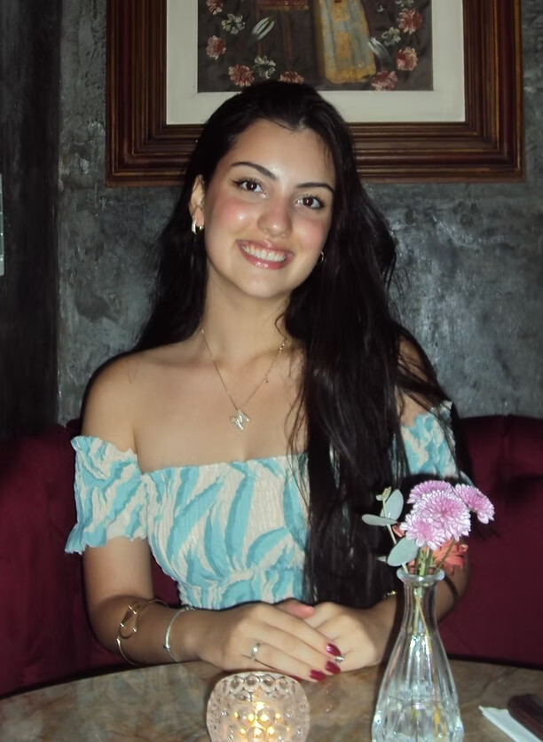
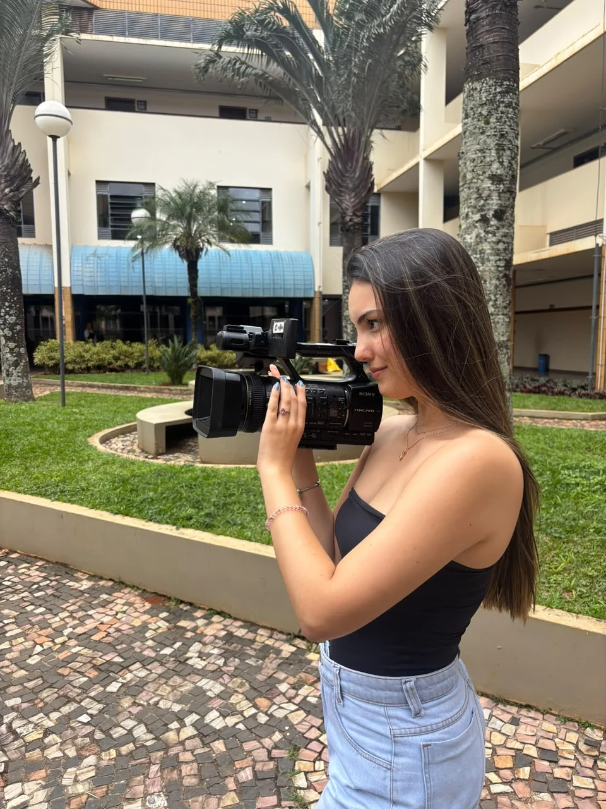
Se tem uma pauta, uma câmera ou uma boa conversa, pode me chamar.
Vamos conversar? ↗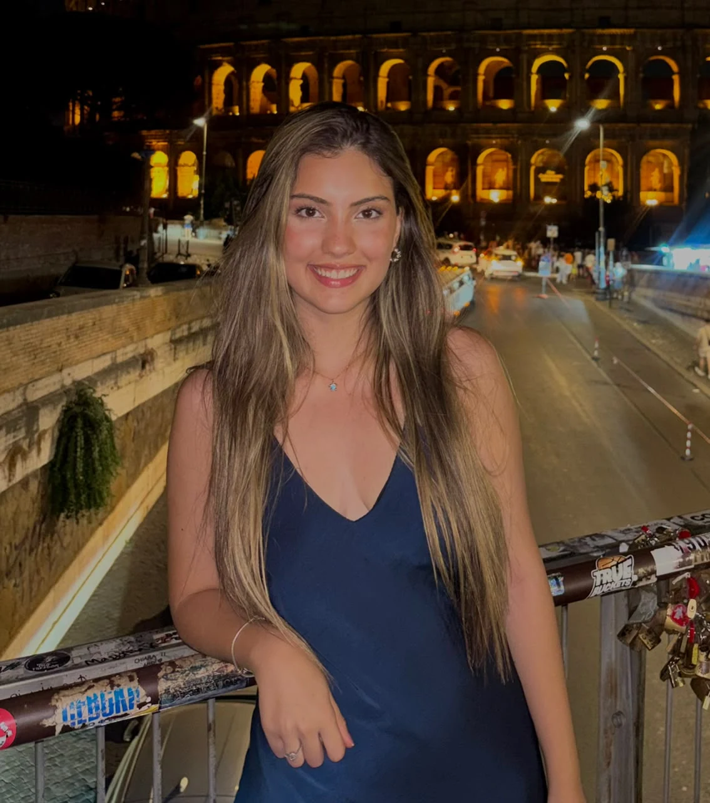
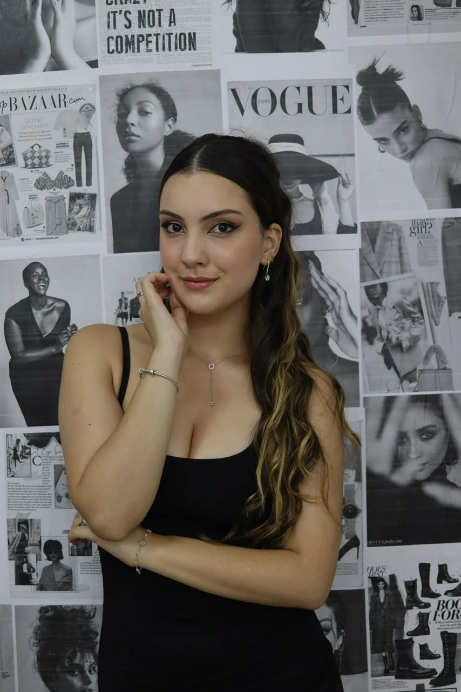
Cobertura da Liga das Nações de Vôlei em Brasília, com apuração presencial e entrevistas em português e inglês, incluindo atletas da Seleção Brasileira. Trabalho realizado pelo DF Esportes, com produção de reportagens e conteúdo para as redes sociais do portal.
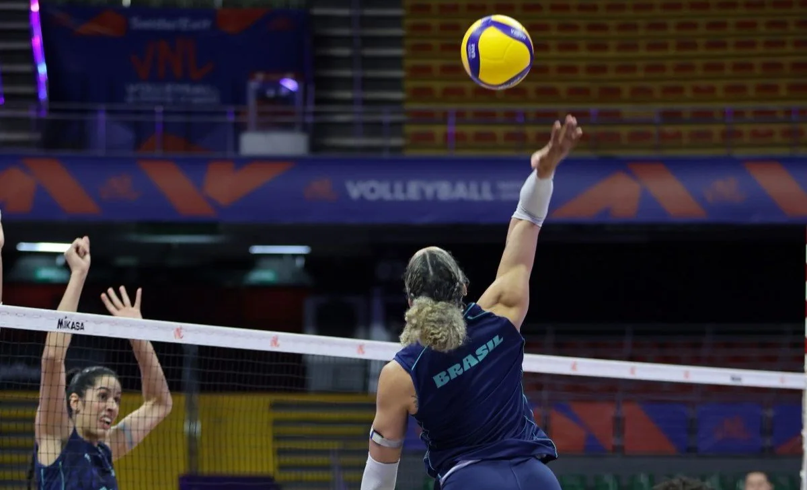


Entrevistas realizadas durante a cobertura da VNL 2026 para o DF Esportes.
Reportagens sobre vôlei, futebol e outras modalidades, com acesso direto à publicação original.
Ver também a reportagem impressa na Capitu ↓
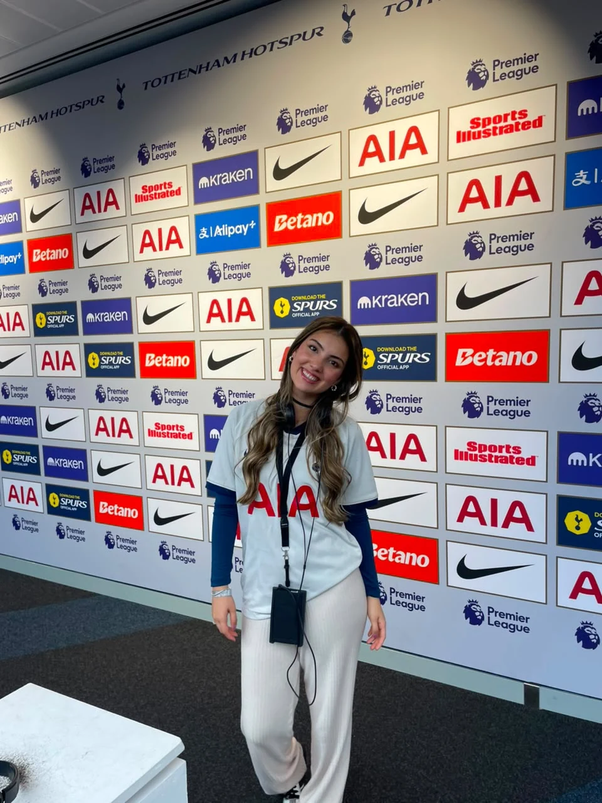
Maria Júlia Mendes acompanha a formação de leitores na primeira infância e ouve educadoras do Distrito Federal sobre o papel das histórias em casa, na escola e na biblioteca.
 Ler a reportagem · páginas 6 e 7
Ler a reportagem · páginas 6 e 7Desenvolvimento de roteiros para vídeos, com organização das ideias, construção de narrativa, definição de cenas e adaptação da linguagem ao público e à plataforma. Em breve, exemplos em vídeo deste trabalho.
Planejamento e execução de conteúdo para redes sociais da Dra. Tamara Mendes, com participação na roteirização, direção e condução de vídeos, além da criação de posts e carrosséis. Trabalho voltado à construção de narrativas acessíveis, humanizadas e alinhadas à comunicação profissional da especialista.
Desenvolvimento de ideias, roteiros e direção de gravação para conteúdos audiovisuais, organizando a mensagem e a apresentação para o formato vertical.
Criação e organização de sequências de conteúdo para apresentar temas, fortalecer a presença digital e aproximar a profissional do público.
Conteúdo digital para comunicação em odontopediatria, com linguagem acolhedora e foco na relação com famílias e pacientes.
Peças gráficas e conteúdo audiovisual produzidos para as redes sociais do DF Esportes, com foco na comunicação esportiva.


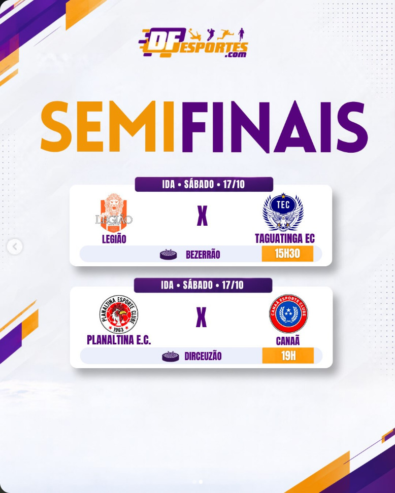
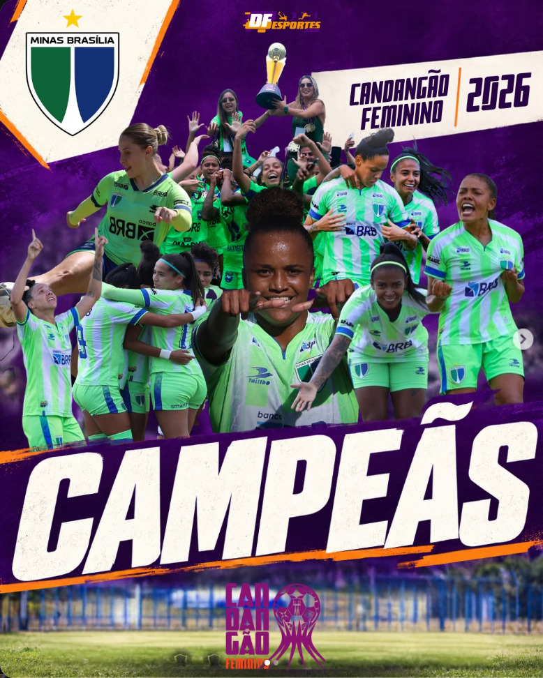

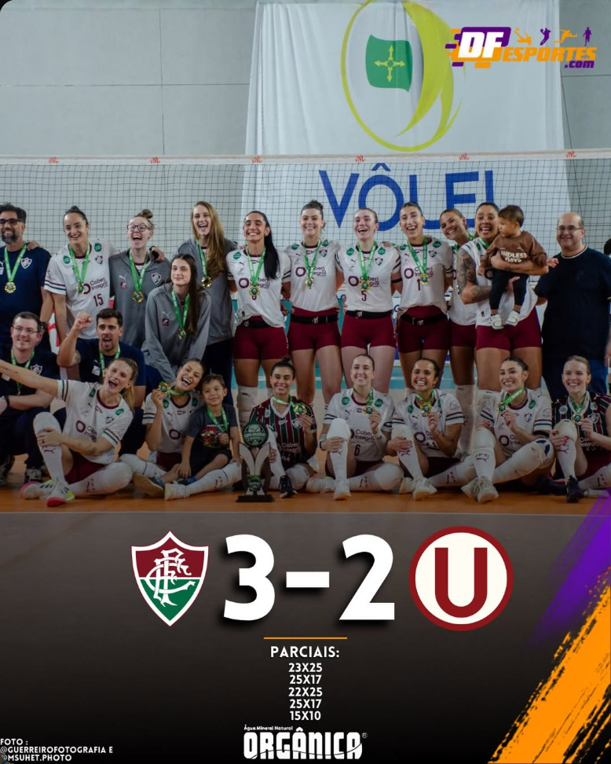

DF Esportes
DF Esportes
Projeto acadêmico de jornalismo de moda sobre a Paris Fashion Week, explorando moda, cultura, poder e influência, além da presença brasileira nas passarelas internacionais. A proposta editorial inclui uma revista de 30 páginas e materiais de divulgação que traduzem sua identidade visual.
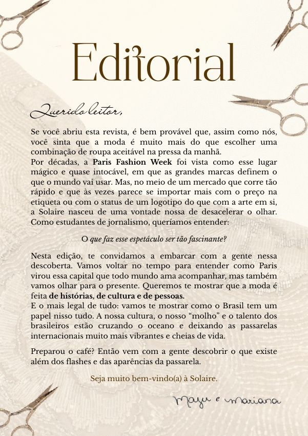
Miolo completo · 30 páginas
Ler revista (PDF) ↗
Material de divulgação da revista
Ver projeto (PDF) ↗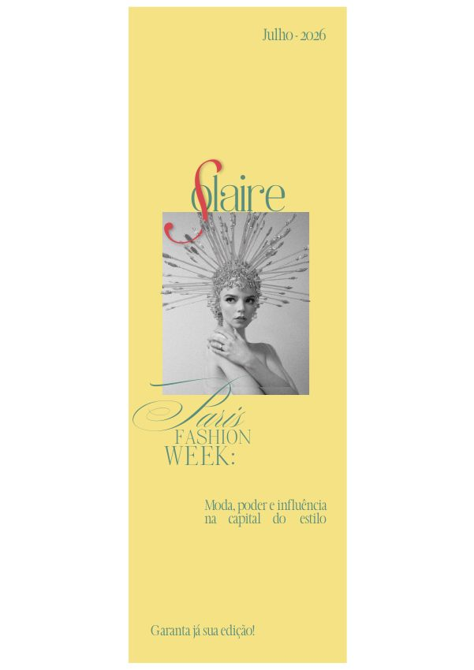
Peça gráfica promocional
Ver projeto (PDF) ↗Apuração e redação de reportagens esportivas; cobertura da VNL em Brasília, com entrevistas em português e inglês, inclusive com atletas da seleção brasileira; gestão do Instagram, roteiros e edição de Reels e Stories.
Fotografia, edição, composição visual e participação em projetos de comunicação e marketing.
Bacharelado em Jornalismo · ingresso em 2025, em andamento.
Smart Idiomas · conclusão em 2025. Intercâmbio de um mês na Irlanda para estudos da língua inglesa.
Curso de jornalismo esportivo · 2025.
Formação em língua inglesa e experiência de monitoria acadêmica, com certificações emitidas pelas instituições.
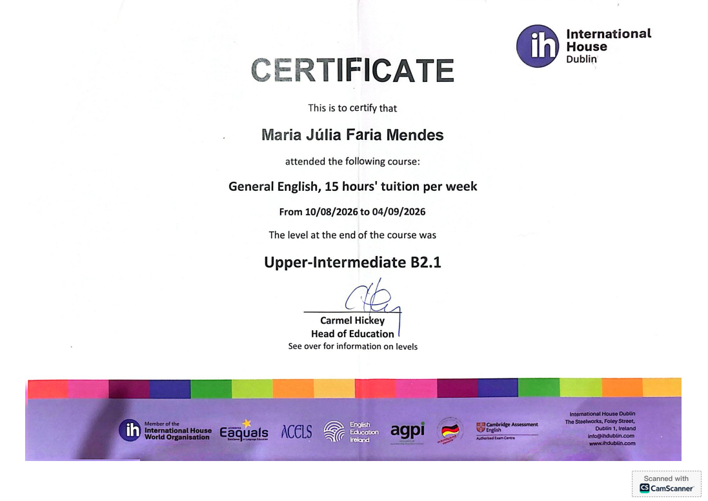
Curso de inglês geral realizado na Irlanda, com 15 horas semanais. Nível final registrado: B2.1.
Ver certificado original (PDF) ↗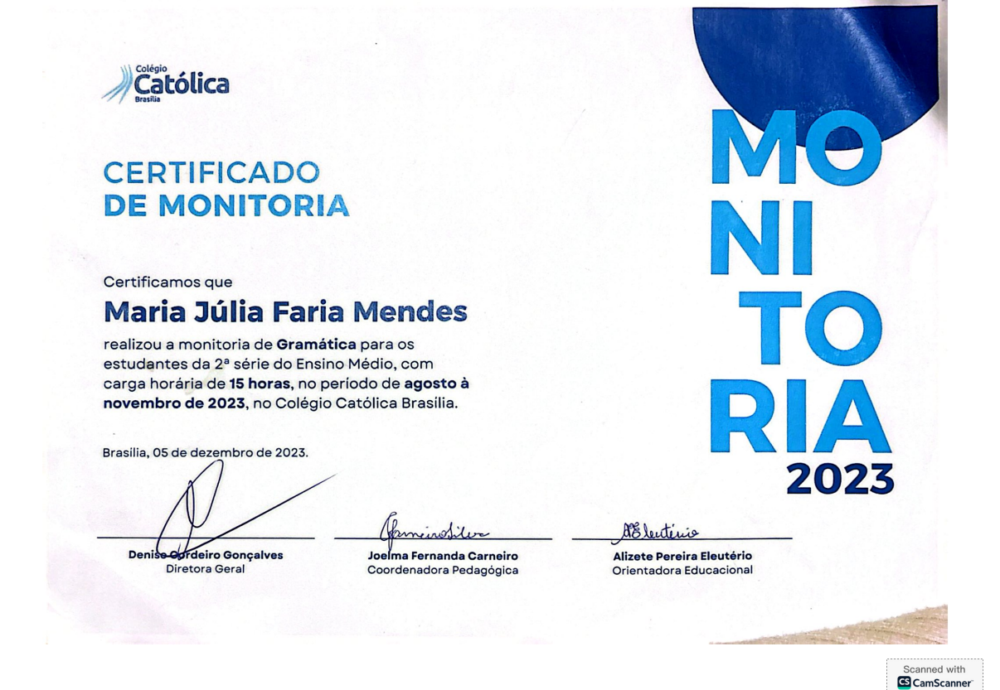
Atividade de apoio a estudantes da 2ª série do Ensino Médio, com carga horária de 15 horas.
Ver certificado original (PDF) ↗
Disponível para oportunidades em jornalismo, comunicação e produção de conteúdo.
Enviar e-mail ↗